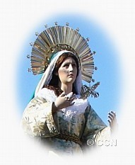
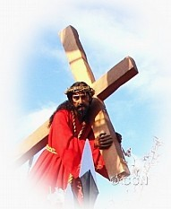

La fachada de la Iglesia tiene dos campanarios bajos, ocho grandes columnas salomónicas
con diseños ornamentales tallados en estuco y el escudo de esa Orden religiosa. En las hornacinas,
se observan las imágenes de santos mercedarios; de San Pedro Nolasco, fundador de la Orden; y de
Nuestra Señora de la Merced. En 1687, el Ayuntamiento de la ciudad les otorgó un terreno en una calle que
colindaba con la parte de atrás de la iglesia. En la actualidad, esa área es el final de la Calle del Arco.
Como consecuencia del terremoto ocurrido en 1773, esta Iglesia y Convento sufrieron daños considerables.
En la actualidad, la Iglesia se encuentra reconstruida y es muy visitada por los feligreses para venerar a
la imagen de Nuestra Señora de la Merced, patrona de la ciudad, y a la imagen de Jesús Nazareno.

El 3 de abril de 2004, el Consejo Municipal de La Antigua Guatemala proclamó a
Jesús Nazareno de la Merced como Protector e Intercesor de los Antigüeños.

Cada año, en Semana Santa, se prepara un huerto y una alfombra de aserrín de colores frente a la capilla de Jesús de Nazareno
Actualmente, el Convento de la Merced se encuentra en ruinas. En el interior del claustro principal de ese
Convento se encuentra una fuente, con diseño octagonal, que es considerada como la de mayor tamaño en Hispanoamérica.